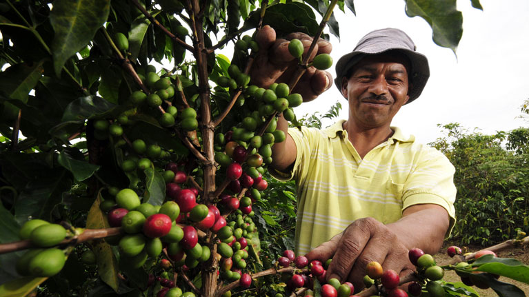

Coffee Introduction
Java Coffee formed a partnership with Columbia, so we can get the highest quality of coffee beans. As a result of the partnership, we provided people in Columbia with over 1000 jobs. Java Coffee improved the life of the coffee bean farmers by empowering them with business skills.
